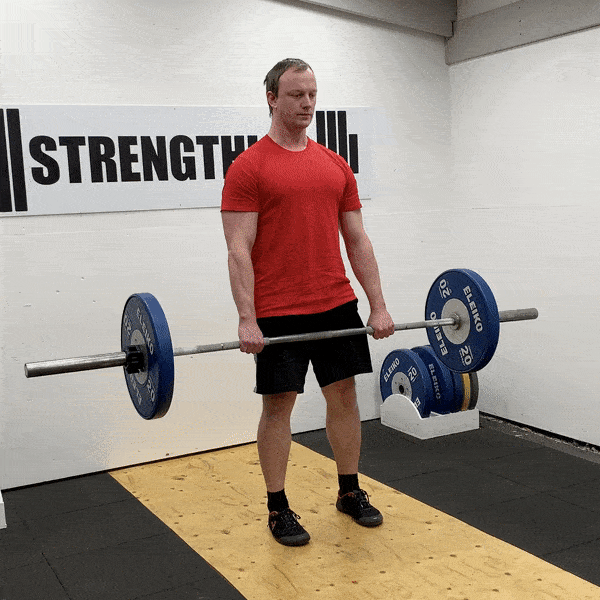

Close-Grip Bench

The close-grip bench press is a strength exercise targeting the
triceps, chest, and shoulders, performed by pressing a barbell upward
with hands shoulder-width apart or closer. To start, lower the barbell
to your mid-chest with elbows tucked in, then press it back up
focusing on chest engagement.
Front Squat

To perform the front squat, stand with feet shoulder-width apart, hold
the barbell on your front shoulders with elbows high, and lower into a
squat until your thighs are parallel to the ground. Keep your chest up
and core tight, then drive through your heels to return to standing.
Dumbbell Row

To perform a dumbbell row, bend at the waist with a dumbbell in one
hand, keeping your back straight and your knee and hand on a bench for
support. Pull the dumbbell toward your hip, squeezing your shoulder
blade, then lower it back down with control.
Arnold Shoulder Press

To perform an Arnold shoulder press, start seated with a dumbbell in
each hand, palms facing your shoulders. Press the dumbbells overhead
while rotating your palms outward, then reverse the motion to return
to the starting position.
RDL (Romanian Deadlift)

To perform a Romanian deadlift, stand with feet hip-width apart,
holding a barbell with an overhand grip in front of your thighs. With
a slight bend in your knees, hinge at your hips to lower the barbell
down your legs, keeping your back straight, then return to the
starting position by driving your hips forward.